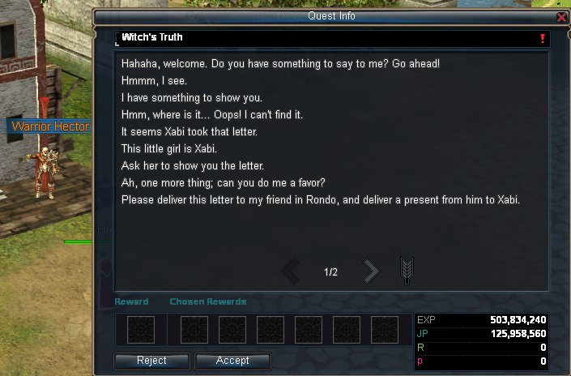
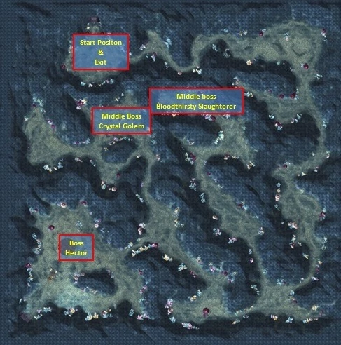

← Back to Home
Remains of the Ancients
With the release of Epic 9.3 a new dungeon was added: “Remains of the Ancients”. Along with two new TP Quests, both of which can be started at 160. However, one can only be completed once the player has reached level 170.
After reaching level 160, players can accept a quest from Warrior Hector in City of Ruins which begins a series of quests allowing them to enter the Remains of the Ancients. However, the final quest can only be completed once the player reaches 170 and returns to Warrior Hector. After completing this quest, players will receive an additional TP point.

Quest Walkthrough
- Head to Rondo to find Armor Trader Bella.
- Kill Lilith in stage 3 or 4 of the Red Spider Circus to acquire a Bright Piece of Fabric (this may take a few attempts) and give it to Armor Trader Bella.
- Once you hand in the Fabric you will be given a Cute Doll. Head back to City of Ruins (you won’t be given a quest) and talk to Witch’s Child Xabi who is located right next to Warrior Hector.
- Accept that quest then talk to her again to turn it in (she takes the Cute Doll from you).
- Talk to Warrior Hector again before heading to Mare Village to talk with Charmer Kisha.
- Accept the quest from her and kill a Starving Slaughter, which can be found wandering around outside Mare Village.
- Return to Charmer Kisha and turn the quest in, accept her new quest and head back to Warrior Hector in City of Ruins.
- Accept his quest and head to the Red Spider Circus again. Kill Soul of Lunacy in either stages 3 or 4 and acquire the Remaining Trace (this could take a few attempts like Lilith).
- After acquiring the Remaining Trace, return to Warrior Hector.
- Talk to Witch’s Child Xabi, accept her quest and she will give you a Defense Force Token — this item will allow you to enter the Remains of the Ancients. Finally talk to Hector again to accept the last part of the quest; you will be tasked with acquiring a Bloody Report from Grandmaster Hector in the Remains of the Ancients.
- Once this part has been completed, if you have not yet reached level 170 Hector will no longer have anything to say to you. After reaching 170 and returning to Hector you will be able to finish this quest line and receive an additional TP.
Dungeon Map
